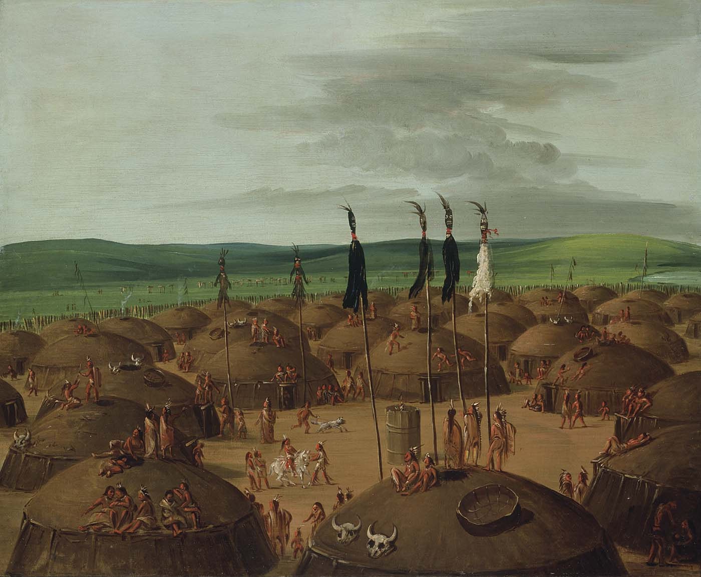

Directions: The five stations below are the record of the Corps of Discovery and of the West it entered, from a treaty signed in Ohio in 1795 to the story of the enslaved man who crossed the continent and came home still enslaved. Study each station and answer its questions. At every station, state whose purposes the expedition served at that moment. In Part 2, judge what the corps chiefly was, and defend your judgment.
Source: Treaty of Greenville, August 3, 1795, preamble and Articles I, II, and III, as carried in the audited TPSP bank record (Charles J. Kappler, editor, Indian Affairs: Laws and Treaties, volume 2, 1904). Spelling follows the edition. Cuts are marked with ellipses.
"A treaty of peace between the United States of America and the Tribes of Indians, called the Wyandots, Delawares, Shawanoes, Ottawas, Chipewas, Putawatimes, Miamis, Eel-rivers, Weea's, Kickapoos, Piankashaws, and Kaskaskias."
"Article I: Henceforth all hostilities shall cease; peace is hereby established, and shall be perpetual; and a friendly intercourse shall take place, between the said United States and Indian tribes."
"Article II: All prisoners shall on both sides be restored. ..."
"Article III: ... the said Indian tribes do hereby cede and relinquish forever, all their claims to the lands lying eastwardly and southwardly of the general boundary line now described. ..."
The treaty was signed at Greenville, the headquarters of General Anthony Wayne's army, a year after Wayne defeated the Western Confederacy at Fallen Timbers. The United States delivered goods at the signing and promised goods yearly.
Name the two sides of this treaty as the preamble names them, and state what Article I promises, what Article II arranges, and what Article III takes, in the treaty's own word for how long. This treaty was signed at an army's headquarters after a defeat. Whose purposes did this instrument serve in 1795, and what in the text itself shows the terms on which the cession was made?
Source: Thomas Jefferson to Meriwether Lewis, June 20, 1803, as transcribed and edited by Gerard W. Gawalt, Manuscript Division, Library of Congress (Rivers, Edens, Empires exhibition transcription). Spelling follows the transcription, including Jefferson's own. Cuts are marked with ellipses.
"The object of your mission is to explore the Missouri river, & such principal stream of it as by it's course and communication with the waters of the Pacific ocean whether the Columbia, Oregon, Colorado or any other river may offer the most direct & practicable water communication across this continent for the purposes of commerce."
"The commerce which may be carried on with the people inhabiting the line your will pursue, renders a knolege of those people important. You will therefore endeavour to make yourself acquainted ... with the names of the nations & their numbers; the extent & limits of their possessions; their relations with other tribes of nations; their language, traditions, monuments; ..."
"In all your intercourse with the natives, treat them in the most friendly & conciliatory manner which their own conduct will admit; allay all jealousies as to the object of your journey, satisfy them of it's innocence, make them acquainted with the position, extent character, peaceable & commercial dispositions of the US. of our wish to be neighborly, friendly, & useful to them, & of our dispositions to a commercial intercourse with them; ..."
State the mission's object in Jefferson's own terms, then list four things Lewis is ordered to learn about the nations on his line. The same document orders the friendliest treatment and a census of other peoples' lands and numbers for a government planning commerce through their country. Whose purposes do these instructions serve at the moment they are written, and how do the orders about knowledge and the orders about friendship work together rather than against each other?
Source: William Clark, journal entry of May 14, 1804, as carried in the audited TPSP bank record (Journals of Lewis and Clark, Project Gutenberg). Spelling follows the record, including Clark's own. The passage quoted is the entry's first part, printed entire.
"May the 14th-Monday Set out from Camp River a Dubois at 4 oClock P.M. and proceded up the Missouris under Sail to the first Island in the Missouri and Camped on the upper point opposit a Creek on the South Side below a ledge of limestone rock Called Colewater, made 41/2 miles, the Party Consisted of 2, Self one frenchman and 22 Men in the Boat of 20 ores, 1 Serjt. & 7 french in a large Perogue, a Corp and 6 Soldiers in a large Perogue. a Cloudy rainey day. wind from the N E. men in high Spirits"

Rebuild the party from Clark's roster: who is in the boat, and who is in each of the two pirogues, with their numbers. Then state the day's distance and weather as he records them. This entry was written as the expedition's official record for the government that sent it. Whose purposes does a journal entry like this one serve, and what does its plain bookkeeping on the very first day already show about what kind of expedition this was?
Source: Meriwether Lewis, journal entry of August 17, 1805, in The Journals of the Lewis and Clark Expedition, edited by Gary E. Moulton, University of Nebraska Press, as published in the edition's online text by the University of Nebraska, Lincoln. Spelling follows the edition, including Lewis's own. Cuts are marked with ellipses.
"Shortly after Capt. Clark arrived with the Interpreter Charbono, and the Indian woman, who proved to be a sister of the Chif Cameahwait. the meeting of those people was really affecting, particularly between Sah cah-gar-we-ah and an Indian woman, who had been taken prisoner at the same time with her, and who had afterwards escaped from the Minnetares and rejoined her nation."
"... we called them together and through the medium of Labuish, Charbono and Sah-cah-gar-we-ah, we communicated to them fully the objects which had brought us into this distant part of the country ..."
Lewis had met the Shoshone days before and had brought some of the band across to meet Clark's party at the forks. The corps needed Shoshone horses to carry its baggage over the mountains. Every word at the council passed through a chain: Lewis spoke English, Labiche rendered it into French, Charbonneau into Hidatsa, and Sacagawea into Shoshone.
State who proved to be whose sister, and whose meeting with an old companion Lewis calls really affecting, with the companion's history as he gives it. Then trace the interpreting chain in order and state what was communicated through it. At this moment, whose purposes was the expedition serving: the government's that had sent it, the Shoshone's who held the horses, or Sacagawea's? Answer from the record, and name what each of the three got out of this council.
Source: Teaching summary. This station is a summary, not a quotation. It is built from the expedition journals and from William Clark's letters after the return, and it is labeled a summary on its face so that nothing in it is mistaken for a period text.
York was an enslaved man held by William Clark, who had been assigned to Clark as a boy and crossed the continent as his servant and as a working member of the Corps of Discovery. The journals show him hunting and bringing in game, scouting, tending the sick Sergeant Floyd before Floyd's death in August 1804, and drawing the close attention of Native peoples who had never seen a Black man. When the captains polled the party on the site of the winter camp near the Columbia's mouth in November 1805, York's vote was recorded with the others. The other enlisted men came home to pay and land. York came home to slavery. After the return he asked Clark for his freedom, and asked at least to live near his wife, who was enslaved in Kentucky, offering to work there and send Clark his earnings. Clark refused for years. His letters to his brother Jonathan in 1808 and 1809 complain of York's wish for freedom, threaten that a runaway or a refusal of duty would see York sent to New Orleans and sold or hired to a severe master, and record a beating. Clark told Washington Irving in 1832 that he had freed York years after the expedition and set him up in a freighting business. No independent record of the freeing, the business, or York's death has been found.
List three things the journals show York doing on the expedition, and state what he received on the return, set beside what the enlisted men received. Then state what he asked for afterward, what Clark's letters show Clark doing about it, and how the summary itself tells you to treat Clark's 1832 account. At the moment of the return, whose purposes had York's service on the expedition served, his own or his enslaver's? Answer from this record alone.
The five stations, with the reading, are the evidence for your judgment of what the Corps of Discovery chiefly was. Sort first, then judge.
The sorting. Enter each station number under what it shows the corps doing, in one line each, with one quoted phrase or named fact from the station as the evidence: taking land by treaty, carrying out a president's orders, keeping a government's record, depending on Native kinship and knowledge, and laboring under enslavement. Station 5 is a labeled summary; cite its facts as facts of the summary's record, not as quotations.
Your verdict. Judge whether the Corps of Discovery should be remembered chiefly as explorers, as diplomats, or as surveyors for settlement, and defend the judgment in a paragraph. Your verdict must use at least three stations' evidence, cited by number, and it must account for the treaty at Station 1, which was signed nine years before the corps set out, and for York at Station 5, whose crossing served someone else's purposes.
The strongest counterclaim. A classmate argues for one of the two verdicts you did not choose. State that claim at full strength from the documents, and then answer it: what does the record at the other stations show that the single label cannot hold?
The sides, the articles, and the purposes. The preamble names the United States of America on one side and twelve named tribes on the other, listed in the record as the Wyandots, Delawares, Shawanoes, Ottawas, Chipewas, Putawatimes, Miamis, Eel-rivers, Weea's, Kickapoos, Piankashaws, and Kaskaskias. Article I promises that all hostilities shall cease and that peace shall be perpetual, with friendly intercourse between the two sides. Article II arranges that all prisoners on both sides be restored. Article III takes the land: the tribes cede and relinquish forever all their claims to the lands eastwardly and southwardly of the boundary line. The instrument served the United States' purpose of opening Ohio to settlement, on terms the setting explains: it was negotiated at Wayne's headquarters a year after Fallen Timbers, and the cession is written as compensation for injuries and expenses and in consideration of goods delivered and promised. Students should see both facts in the text at once. It is a treaty between named peoples, with promises running both ways, and it is a cession extracted after a military defeat, which is the pattern the reading names for the decade before the corps set out.
The object, the knowledge ordered, and the two orders together. The object, in Jefferson's terms, is to explore the Missouri and find the most direct and practicable water communication across the continent for the purposes of commerce. Lewis is ordered to learn, among other things, the names of the nations and their numbers, the extent and limits of their possessions, their relations with other tribes, and their language, traditions, and monuments; any four earn the point. The orders serve the United States government that issued them, and the knowledge and the friendship work together inside that service: friendly and conciliatory treatment, and the assurance that the journey is innocent, are how a small armed party passes safely through other peoples' countries, and the census of lands, numbers, and trade is the information a government needs to follow the party with commerce. Neither order cancels the other. Diplomacy was the expedition's method, and information for Washington was its product, and students who set the friendly manner against the counting as a contradiction have missed how Jefferson designed the two to run in one errand.
The roster, the day, and the bookkeeping. Clark's roster: in the boat of twenty oars, Clark himself (the 2 counts Lewis's place in the party's command pairing as Clark writes it; accept Clark, one Frenchman, and 22 men), a sergeant and 7 Frenchmen in one large pirogue, and a corporal and 6 soldiers in a second large pirogue. The day's distance is four and a half miles, made under sail, on a cloudy rainy day with wind from the northeast, the men in high spirits. A journal entry like this one serves the government that sent the expedition: it is the official record, rendered to Washington, in which distance, weather, boats, and hands are accounted for from the first afternoon. Its bookkeeping shows what kind of expedition this was before any exploring happened: an Army detachment under orders, dependent from day one on French boatmen whose river craft the roster records, and already converting country into entries, miles, creeks, and rock ledges named and fixed for readers at home. The entry also shows the record's limit, which Station 5 presses: York, who crossed the whole continent, does not appear in this first roster by name.
The sister, the chain, and the three purposes. The Indian woman, Sacagawea, proved to be a sister of the chief Cameahwait. The meeting Lewis calls really affecting is between Sacagawea and an Indian woman who had been taken prisoner at the same time with her and who had afterwards escaped from the Minnetares, the Hidatsa, and rejoined her nation. The chain ran Lewis in English, to Labiche in French, to Charbonneau in Hidatsa, to Sacagawea in Shoshone, and through it the captains communicated fully the objects which had brought them into that distant part of the country. All three purposes were served at this council, and full answers name all three. The government got its passage negotiated and its objects announced in the mountains. The Shoshone got a trade opened on their own ground, goods for horses they chose to sell, and a hearing in which their position as the holders of the crossing was the whole reason for the meeting. Sacagawea got her brother, her people, and news of her family, and the record shows her doing the work the moment turned on: without her voice in the chain there is no council at all.
The service, the return, and the letters. Any three of the journal facts earn the point: hunting and bringing in game, scouting, tending Sergeant Floyd before his death in August 1804, drawing Native peoples' close attention, and voting in the November 1805 poll on the winter camp. On the return the enlisted men received pay and land; York received continued enslavement. He asked for his freedom and asked at least to live near his wife in Kentucky, offering to work there and send Clark his earnings. Clark's letters to his brother Jonathan in 1808 and 1809 show him refusing for years, complaining of York's wish for freedom, threatening sale at New Orleans or hiring to a severe master if York ran or refused duty, and recording a beating. The summary instructs students to treat Clark's 1832 account to Washington Irving, that he had freed York and set him up in business, as unverified: no independent record of the freeing, the business, or York's death has been found, and the account comes from the enslaver a quarter century later. York's service served his enslaver's purposes: the labor, skill, and vote were his, and every reward the expedition paid out went to other men, which is the plainest statement in the file of whose country the West was and whose it was being made into.
Full credit should be awarded if the verdict:
Teacher note on the verdicts. The most common failure is a verdict of explorers defended by scenery, in which the Teton confrontation, the Shoshone council, and York never appear. Station 4 exists to prevent that reading: the expedition's hardest passage was obtained in a family reunion conducted through four languages, and the woman at the center of it had been carried out of that country as a captive years before. The second failure is treating Station 1 as background rather than evidence. Greenville is in the file because Jefferson's instructions were written by the government that had already taken Ohio by the method the treaty records, and a verdict that starts the story in 1804 has accepted the expedition's own framing of itself.